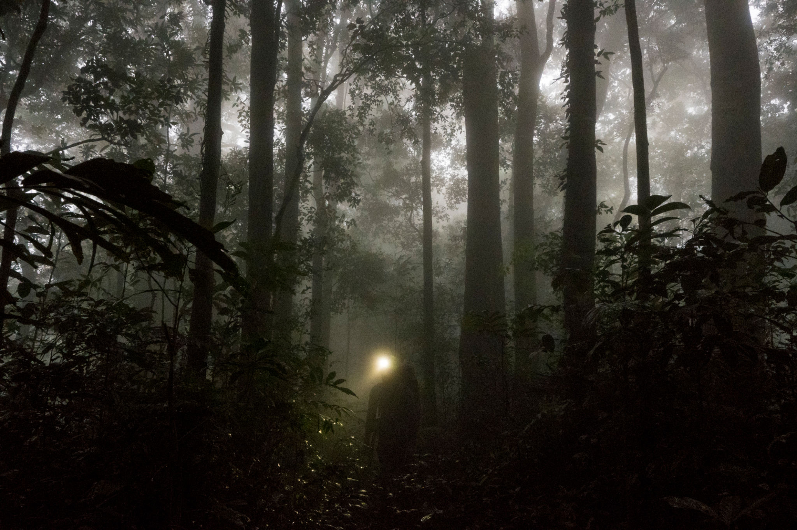
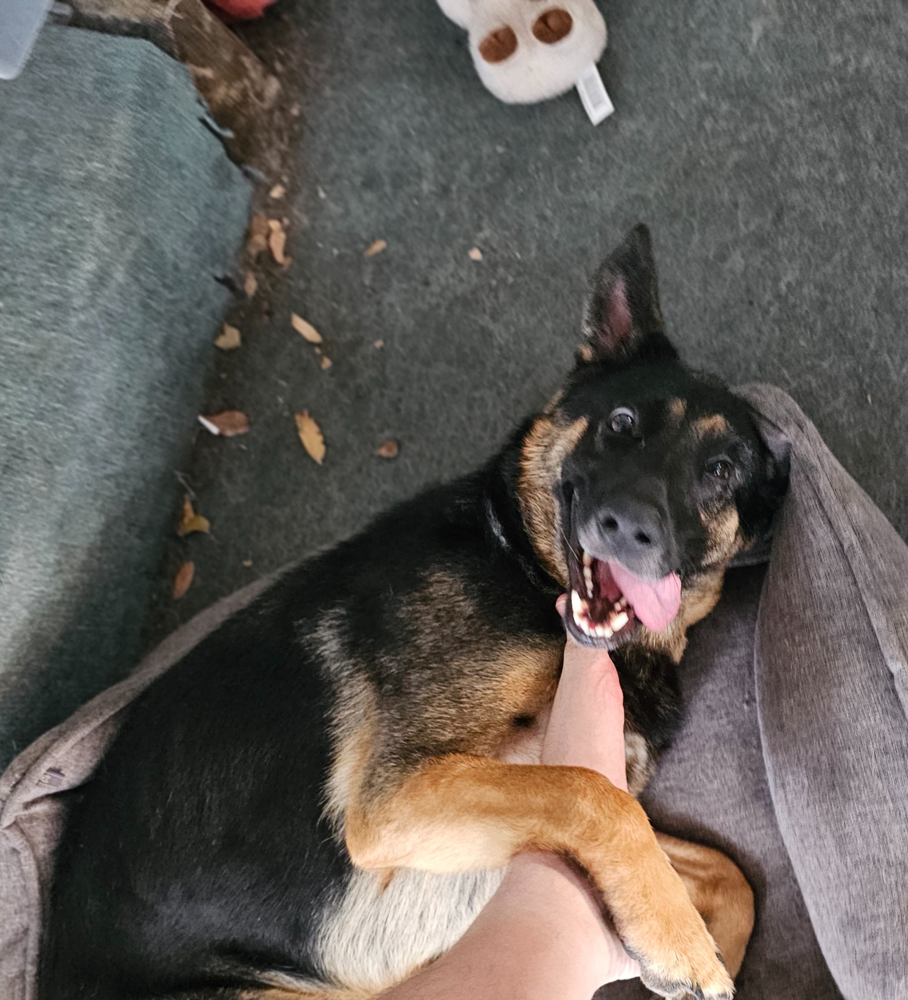
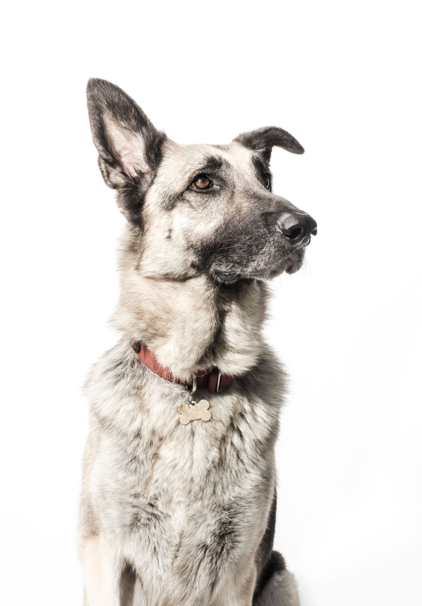
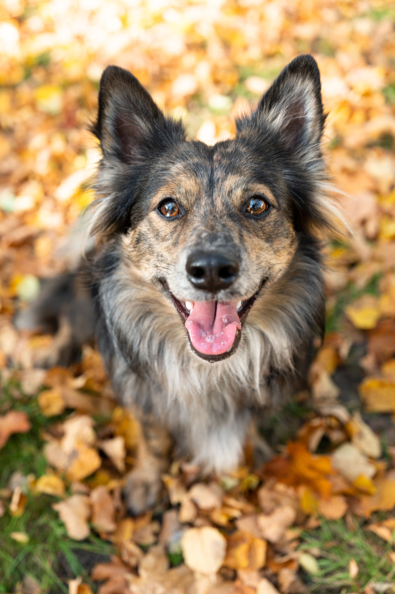
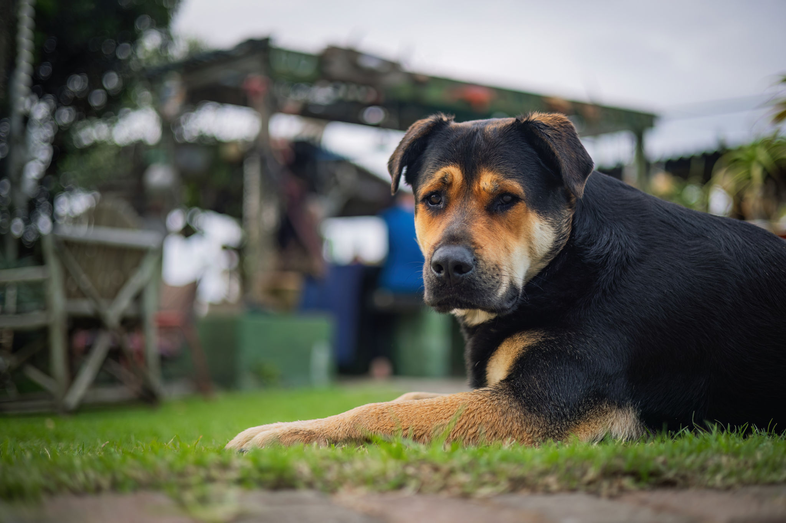

DDR German Shepherd · Beloved Companion · Suspected Wolf
She has a dog bed. She has a name tag. She has a very suspicious relationship with the moon.

Meet the subject
A DDR (East German) German Shepherd of extraordinary presence, questionable motives, and undeniable charm. She lives in a house. Allegedly.
The Great Debate
The evidence has been gathered. The jury is still out. The subject is currently staring at you from across the room.
and climbing...
Has a registered dog license. (Self-obtained? Unclear.)
Responds to "Minky." Most of the time. When she feels like it.
Has a dog bed. Refuses to use it. Prefers the couch. The good couch.
Wags her tail. Experts note wolves also wag tails. Investigation ongoing.
Eats kibble. Has been observed staring at kibble for 4 minutes before eating it, as if considering her options.
Howls at the moon. Also at the mailman. Also at a leaf that moved funny.
Eyes glow in the dark. "That's just tapetum lucidum," say scientists. Sure it is.
DDR lineage traces directly to working lines bred for extreme drive, intelligence, and — we're just saying — wolf-adjacent energy.
Has never once been photographed blinking. Not once.
Stares at walls for extended periods. Something is in those walls. She knows.
Survived a thunderstorm without flinching. A thunderstorm. Who does that?
"The investigation is ongoing. Minky has been informed of the charges. She blinked once, slowly, and walked away."
— Official Case Notes
Field Documentation
Hover over each photo for expert analysis. Results may be unsettling.
The Subject Herself
Caught mid-zoomie. Note the suspicious grin. Wolves smile like that.
The Zoomies Phase
Wolves also run. Coincidence?

Claiming the Couch
Territorial behavior noted.

The Thousand-Yard Stare
She sees things we cannot.
Playtime (Allegedly)
Or training. Hard to say.

Surveilling the Perimeter
Monitoring the territory. Classic wolf behavior.
Winter Mode: Activated
Thrives in the cold. Suspicious.
Resting (Recharging)
Even wolves need to nap. Probably.
New evidence emerges daily. The wolf probability meter has never gone down. Not once.
We serve cookies. We use tools, such as cookies, to enable essential services and functionality on our site and to collect data on how visitors interact with our site, products and services. By clicking Accept, you agree to our use of these tools for advertising, analytics and support.